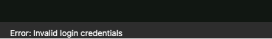
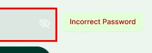

Oak AI / RESEARCH TO DESIGN · PRODUCT CLARITY
Turn a UX audit into decisions people can see.
Connecting inconsistent navigation and unclear feedback to concrete design recommendations for an early AI product.
7 min read


- The task
- Understand what the product offers, choose the right starting point, and recover when account access fails.
- My contribution
- Desktop heuristic evaluation, navigation alternatives, visual recommendations, and research-to-design collaboration.
- Where it landed
- A November 2023 evaluation followed by team recommendations, two navigation sitemaps, and later usability work. These artifacts do not establish measured product improvements.
THE CONTEXT
The navigation problem began with what the product was asking people to understand.
Oak's early web app put several choices in front of a person: train an assistant, start a VibeCheck, or ask for feedback and support. The evaluation also found mismatches between labels and destinations. One concrete example was a User Account link opening a page headed User Pages. A person could arrive at the right screen and still be unsure whether it was the one they expected.
The product context and constraints
I evaluated the desktop experience in Chrome on November 22, 2023. The review covered page titles, the home page's value proposition and primary actions, navigation, branding, and error feedback. These were expert findings about the interface, not observations from that day's participant study.
The next step was to make the recommendations useful to the team. I presented the findings and began an improvement list for future backlog work. In December, I compared navigation labels and developed two concise sitemaps. I worked with the lead UX designer on the mockups and later helped refine the shared header and footer.
Constraints that shaped the work
- The website and web application had inconsistent branding, navigation placement, and labels.
- The first artifact was a desktop expert evaluation; the mobile checklist was not populated with ratings.
- Recommendations needed to become specific enough for shared design work and prioritization, without treating future research as already completed.
MY CONTRIBUTION & COLLABORATION
As Lead UX Researcher, I conducted the evaluation, developed recommendations and navigation alternatives, and contributed UX writing and handoff documentation. I collaborated with the lead UX designer on Figma mockups. In the January follow-up, I conducted usability sessions; the lead UX designer then led the targeted mockup refinements.
{kind=link}
DECISION 02
Put the error beside the field.
The report describes an error alert at the bottom of the interface with a subtle treatment close to other page colors. The heuristic worksheet separately flags that error messages did not clearly explain the next step.
Observed interface

01 / The message at the foot of the page

“Error: Invalid login credentials” appears below the form. It names the failure without connecting it to a field or explaining the next step.
Proposed feedback

02 / The message beside the password

The proposal adds “Incorrect Password” beside the field and shows an alert above the form. The field is identified; fuller recovery guidance remains a next step.
Two crops from the original Oak recommendation, 2023. The right-hand view is proposed feedback.
View the full original recommendation

{kind=link}
Alternatives and constraints
- Alternatives
- The recommendation paired the original screen with a red outline around the password field and an Incorrect Password label. It also showed an alert above the form. The one-time login-link action remained available, while the field-level message made the proposed association explicit.
- Constraints and tradeoffs
- Moving the message beside the field made the error more specific, but the label still stopped at naming the problem. Looking back, I would develop the recovery copy further and check how the password and one-time-link routes should work together.
Evidence behind this account
The original comparison makes the proposed change visible. The sources do not establish a measured drop in login abandonment or show that the exact pictured treatment was released.
DECISION 03
Give color a defined job across the product.
The audit linked inconsistent branding and feedback treatment to the difficulty of reading the interface. The color guide defined roles for primary actions, supporting elements, backgrounds, text, and notifications.
{kind=link}
Alternatives and constraints
- Alternatives
- The guide separated brand emphasis from feedback: success, warning, error, and informational messages each had a stated purpose. It also gave primary, secondary, and tertiary roles to background and text colors.
- Constraints and tradeoffs
- This was a focused specification for the next iteration. A palette with named roles could support consistent decisions, but the artifact alone did not establish a complete component library or verify color contrast across the product.
Evidence behind this account
The original one-page Oak UI Kit V2 export is tied to User Story 444 and documents color roles. It establishes a focused design guide, with component coverage and color-contrast validation still to be established.
How the work developed
Desktop evaluation
Recorded the Oak web app's navigation, naming, hierarchy, branding, and error-feedback findings in the heuristic worksheet.
Recommendations shared
Presented the heuristic findings and design recommendations; began an improvement list for later backlog work and team prioritization.
Navigation alternatives
Compared labels and developed two concise sitemaps, with clearer calls to action and a shared header/footer direction.
Collaborative refinement
Helped the lead UX designer refine header and footer mockups, and created short walkthroughs and documentation to clarify work tickets.
A later usability follow-up
During this week, conducted six usability sessions with people of varying familiarity with Oak, then synthesized findings. The lead UX designer led the targeted mockup refinements that followed.
OUTCOME & REFLECTION
A product direction the team could review.
I turned the audit into visual alternatives for navigation and login feedback, with shared color guidance. Each recommendation connected an identified problem to a specific change and the reason for making it.
Make the recommendation concrete—and keep the validation question open.
The useful shift was from describing inconsistency to showing the exact mismatch and an alternative. A label and its destination could be compared. An error could be placed beside the field. A color could have a named purpose. In a next pass, I would connect each recommendation to a task and a check so that the next team review could separate what looked clearer from what people could actually use.
The next question I would test
Test whether first-time users can choose a starting point, recognize that they reached the intended page, and correct a login error without help. Keep those task checks separate from broader feedback about the product's value.
Original heuristic evaluation and design recommendation exports. Screens show proposed changes; implementation and outcome measurement are unverified.